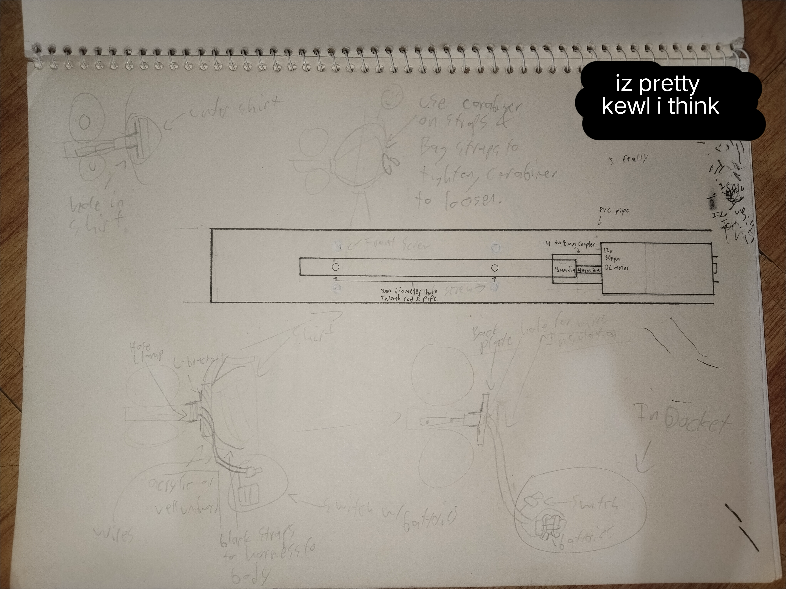

Nano Nano Nano !!

So, there's this cosplay event in the city I'm in, and I had the idea to make Nano Shinonome's spinning key from nichijou! Which I thought would be a pretty ez simple project, yaknow a motor and pipe and stuff!
It took me MONTHS (plus procrastinating, urhm) to actually get
it finished and done o_O... and I had the cosplay event coming up, so I ordered the parts fast, made a rough
sketch of what it was gonna be, then I got STUCK on what how the heck I was
gonna mount it exactly...
(and also because I didn't possess the tools to fabricate it, lowkeyly!)
Okauy I'm getting ahead of myself, at the start when I was researching materials and such for this, I found
this really cool
nano key someone already made like, 11 years ago! (or smth) So I used it as kind of a template for my key..
Although there was some confusion on how they did it, the steps didn't exactly read like a technical
methodology bruhreurh...

le rough schematic I made

will finsih this soon...